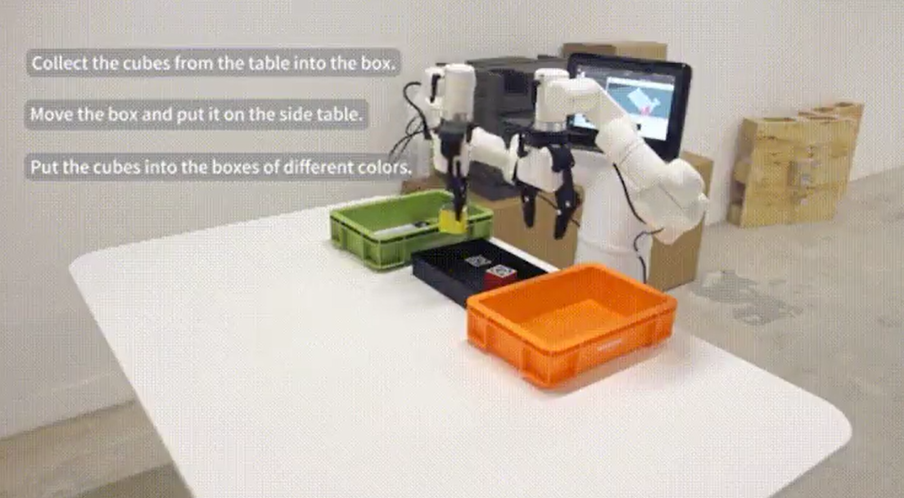

6 机器人使用场景案例
本章节呈现了经典的机械臂使用案例，以展示产品在富有代表性的场景中的应用。这包括了水星Mercury X1轮式人形机器人在不同领域的典型应用，突显了产品的多功能性和适用性。通过这些案例，用户可以深入了解机械臂在实际应用中的灵活性和效能，为他们在特定场景中的应用提供参考。
相关依赖文件可在 https://github.com/elephantrobotics/mercury_demo 下载
二维码识别与抓取
在水星Mercury X1轮式人形机器人机械臂末端装上2D相机及夹爪实现视觉识别二维码抓取，二维码采用stag码，通过stag.detectMarkers函数获取stag码相机系的坐标，在通过矩阵变换获取stag码基于底座的坐标，调用坐标控制函数进行抓取。
空间移动案例
可使用键盘对底盘进行遥控操作，也可可以调用mercury_ros_api库对底座进行移动控制及导航。移动抓取案例
此案例将前两个案例结合起来，使用导航将水星Mercury X1轮式人形机器人移动至指定地点，然后通过视觉识别stag，实现抓取。
键盘打字案例
此案例通过识别左上角与右上角的stag码，计算出全部键位的二维坐标、、三维坐标、缩放比例和旋转角度，并将键位在画面中显示出来，通过输入指定按键实现点击。脚本及手套控制灵巧手案例
此案例将通过脚本和动捕手套来控制灵巧手进行手指关节的控制，第一个脚本实现基本的张开和握拳，第二个脚本通过手套实现各个手指关节的动捕控制。
视觉识别功能使用前的准备
1.物料及开机准备
1.1物料准备
视觉识别跟踪需要准备的物料包括： 1) Mercury系列水星机器 2) 视觉传感器及stag码配件 3) 夹爪及相关配件
1.2开机准备
将电源适配器连接上机械臂，也可通过内置电源供电，并将机器人移至空旷区域防止碰撞。

底座后部电源接口位置

电源开关位置

急停开关位置
在按下急停开关后机器人将立即停止运动，复位时需将急停开关顺时针旋转，急停开关将自动弹起，之后可上电恢复控制。
点击电源开关，并确保急停处于复位状态，开始使用机械臂。
2.Mercury整机调试
2.1整机上电
机械臂支持多种方式上电，本文仅介绍使用python指令控制上电，在Terminal终端中输入下述指令使机器人上电：
python
from pymycobot import Mercury
mr = Mercury("/dev/right_arm") #connect to Mercury right arm
ml = Mercury("/dev/left_Arm") #connect to Mercury left arm
ml.power_on()
mr.power_on()
发送指令前，确保急停开关处于复位状态，当听到关节抱闸声则代表上电成功！若未听到抱闸声，使用以下指令反复上下电：
首先发送掉电指令
ml.power_off()
mr.power_off()
等待数秒后发送上电指令
ml.power_on()
mr.power_on()
若仍未听到抱闸声，联系工程师进行处理。
2.2机械臂零点校准
机械臂使用前，需确保零位正确，可以通过下述方法校准零位：
1）使用放松指令释放关节电机（注意！放松后需要扶住关节防止机械臂下坠损坏！）
ml.release_all_servos()
mr.release_all_servos()
2）拖动机械臂回到零位

可以通过以下细节确定零点的位置

3）发送指令锁闭电机
ml.focus_all_servos()
mr.focus_all_servos()
4）检查零点是否正确
输入获取关节角度指令查询当前位置
ml.get_angles()
mr.get_angles()
如果返回的关节角度逼近[0, 0, 0, 0, 90, 0]，则视为零点正确
5）零点校准
如果在零位读取到的关节角度与[0, 0, 0, 0, 90, 0]相差很大，则需要校准关节零位
for i in range(1,7):
ml.set_servo_calibration(i)
mr.set_servo_calibration(i)
校准完毕后读取关节信息，返回为[0, 0, 0, 0, 90, 0]则表示校准成功
ml.get_angles()
mr.get_angles()
2.3机械臂运动
可以通过以下方式验证机械臂运动功能是否正常：
1)确保零点正确后，使用回零指令即可控制机械臂回到零位:
ml.over_limit_return_zero()
mr.over_limit_return_zero()
2)发送关节运动指令，验证机械臂运动是否正常
ml.send_angle(1,20,10)
mr.send_angle(1,20,10)
此时应可观测到机械臂1关节发生旋转，待运动结束后使用指令读取关节信息
ml.get_angles()
mr.get_angles()
若返回值中1关节为20°，则视为运动正常
2.4异常处理
若2.3中机械臂运动异常，使用以下方法观察异常信息
1)获取电机异常信息
ml.get_robot_status()
mr.get_robot_status()
2）获取运动异常信息
ml.get_error_information()
mr.get_error_information()
将上述接口的返回信息交付工程师处理
3.相机和夹爪的安装方法
相机和夹爪的安装方式与视觉识别的手眼矩阵相对应，若安装方式改变则需重新进行手眼标定！
首先将机械臂移动回零点：
ml.over_limit_return_zero()
mr.over_limit_return_zero()
对照下图进行夹爪和相机的安装
4.相机参数配置
4.1 查找相机编号
由于Mercury水星存在多个视觉传感器，在进行相机参数配置前，首先需要找到左右臂相机对应的编号：
1)首先进行相机初始化，在Camera_ID处依次填入0~6数字
obj = camera_detect(Camera_ID = 0, mark_size, mtx, dist, direction)
obj = camera_open_loop()
开启相机，观测相机画面，标记该相机对应的编号,如果相机无法开启，修改Camera_ID并重复该操作
2)修改Camera_ID，按照步骤1依次记录相机编号
obj = camera_detect(Camera_ID = 1, mark_size, mtx, dist, direction)
obj = camera_open_loop()
3)将左右臂相机对应的编号修改到py脚本的下述位置即可
ml_obj = camera_detect(Camera_ID = left, mark_size, mtx, dist, direction)
mr_obj = camera_detect(Camera_ID = right, mark_size, mtx, dist, direction)
4.2 相机内参标定
5.夹爪功能调试
使用以下接口进行夹爪零点校准：
1）夹爪初始化
ml.set_gripper_mode(0)
mr.set_gripper_mode(0)
2）放松夹爪
ml.set_gripper_enabled(0)
mr.set_gripper_enabled(0)
手动张开夹爪至最大
3）设置夹爪零位
ml.set_gripper_calibration()
mr.set_gripper_calibration()
4）控制夹爪闭合
ml.set_gripper_value(0,100)
mr.set_gripper_value(0,100)
此时应能观察到夹爪快速闭合
夹爪异常排查：
1) 夹爪无法运动——重复1~4步骤，若仍然无法运动，联系我方工程师 2) 步骤4未完全合拢——步骤2中，不要张至最大，然后设置零点
6.整机综测
执行下述py脚本，应观察到以下现象：
1) 机械臂回到零位 2) 夹爪打开后闭合 3) 机械臂运动到如下位置 4) 夹爪开合
若现象与上述情况不符，重复测试运动测试、夹爪测试章节
from pymycobot import *
import numpy as np
import time
mr = Mercury("/dev/right_arm") #connect to Mercury right arm
ml = Mercury("/dev/left_Arm") #connect to Mercury left arm
ml.over_limit_return_zero()
mr.over_limit_return_zero()
time.sleep(10)
ml.set_gripper_mode(0)
mr.set_gripper_mode(0)
time.sleep(1)
ml.set_gripper_value(100,10)
mr.set_gripper_value(100,10)
time.sleep(3)
ml.set_gripper_value(0,10)
mr.set_gripper_value(0,10)
time.sleep(3)
ml.send_angles([45, 20, -45, 45, 120, 45], 10)
mr.send_angles([-45, 20, 45, 45, 120, -45], 10)
time.sleep(5)
la = ml.get_angles()
ra = mr.get_angles()
print("left", la)
print("right", ra)
ml.set_gripper_value(100,10)
mr.set_gripper_value(100,10)
time.sleep(3)
ml.set_gripper_value(0,10)
mr.set_gripper_value(0,10)
time.sleep(3)